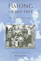
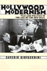
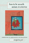

Browse
other Titles:
A B C
D E F
G H I
J K L
M N O
P Q R
S T U
V W X
Y Z |
|
Habitat
for Humanity®
Building Private Homes, Building Public Religion
Baggett,
Jerome P.
360 pp • 6x9 • Fall 2000
paper 978-1-56639-803-9
cloth 978-1-56639-802-2
|
 |
Half
a Job
Bad and Good Part-Time Jobs in a Changing Labor Market
Tilly,
Chris
240 pp • 6x9 • Fall 1995
paper 978-1-56639-382-9
cloth 978-1-56639-381-2 |

|
Hapa Girl
A Memoir
Chai, May-lee
232 pp • 5.5x8.25 • Spring 2007
paper 978-1-59213-616-2
cloth 978-1-59213-615-5
|
|
Hard-Boiled
Working-Class Readers and Pulp Magazines
Smith,
Erin A.
248 pp • 6x9 • Spring 2000
paper 978-1-56639-769-8
cloth 978-1-56639-768-1
|
 |
Harvey
and Jessie
A Couple of Radicals
O'Connor,
Jessie Lloyd, Harvey O'Connor and Susan M. Bowler
278 pp • Spring 1988
paper 978-0-87722-559-8
cloth 978-0-87722-519-5 |
 |
Having
Epilepsy
The Experience and Control of Illness
Schneider,
Joseph W. and Peter Conrad
240 pp • Fall 1983
paper 978-0-87722-398-6
cloth 978-0-87722-318-4 |
 |
Health
and Health Care In Developing Countries
Sociological Perspectives
edited
by Conrad, Peter and Eugene B. Gallagher
336 pp • 6x9 • Spring 1993
paper 978-1-56639-027-9 |
 |
Health
Care Ethics
An Introduction
edited
by VanDeVeer, Donald and Tom Regan
Fall 1986
cloth 978-0-87722-441-9 |
 |
Health
Care Reform and the Battle for the Body Politic
Beauchamp,
Dan E.
224 pp • 5.5x8.25 • Spring 1996
paper 978-1-56639-414-7
cloth 978-1-56639-413-0
|
 |
The
Health of the Republic
Epidemics, Medicine, and Moralism as Challenges to Democracy
Beauchamp,
Dan E.
312 pp • Fall 1988
paper 978-0-87722-729-8
cloth 978-0-87722-558-4 |
 |
Hearts
and Minds
The Controversy Over Laboratory Animals
Groves,
Julian McAllister
240 pp • 5.5x8.25 • Fall 1996
paper 978-1-56639-476-5
cloth 978-1-56639-475-8
|
 |
Hegel's
Dialectic
The Exploration of Possibility
Pinkard,
Terry
272 pp • Fall 1988
paper 978-0-87722-570-6 |
 |
Hegemony
The New Shape of Global Power
Agnew,
John
296 pp • 6x9 • Spring 2005
paper 978-1-59213-153-2
cloth 978-1-59213-152-5
|
 |
Heidegger
and Jaspers
edited
by Olson, Alan M.
192 pp • 6x9 • Fall 1993
paper 978-1-56639-115-3
cloth 978-1-56639-114-6
|
 |
Heidegger
and Nazism
Farías,
Victor, edited by Joseph Margolis and Tom Rockmore
368 pp • 6x9 • Fall 1989
paper 978-0-87722-830-1
cloth 978-0-87722-640-6
|
 |
The
Heidegger Case
On Philosophy and Politics
edited
by Rockmore, Tom and Joseph Margolis
344 pp • 6x9 • Spring 1992
paper 978-0-87722-908-7
cloth 978-0-87722-907-0 |
 |
Help
Your Marriage Survive the Death of a Child
Rosenblatt,
Paul C.
200 pp • 5.5x8.25 • Fall 2000
paper 978-1-56639-805-3
cloth 978-1-56639-804-6
|
 |
Helping
America's Families
Kahn,
Alfred H. and Sheila B. Kamerman
311 pp • Fall 1981
paper 978-0-87722-212-5 |
 |
Helping
Out
Children's Labor in Ethnic Businesses
Song,
Miri
247 pp • 5.5x8.25 • Spring 1999
paper 978-1-56639-709-4
cloth 978-1-56639-708-7
|
 |
Heroes
in Hard Times
Cop Action Movies in the U.S.
King,
Neal
282 pp • 5.5x8.25 • Spring 1999
paper 978-1-56639-702-5
cloth 978-1-56639-701-8
|

|
Higher Education and Democracy
Essays on Service-Learning and Civic Engagement
Saltmarsh, John and Edward A. Zlotkowski
360 pp • 6x9 • Fall 2010
cloth 978-1-4399-0037-6 |
 |
Hikes
Around Philadelphia
Newman, Boyd and Linda Newman
224 pp • 5.5x8.25 • Spring 1997
paper 978-1-56639-530-4
cloth 978-1-56639-529-8
|

|
The Hip Hop Underground
The Integrity and Ethics of Racial Identification
Harrison, Anthony Kwame
226 pp • 6x9 • Fall 2009
paper 978-1-4399-0061-1
cloth 978-1-4399-0060-4
|
|
The Hirschfeld Archives
Violence, Death, and Modern Queer Culture
Bauer, Heike
240 pp • 6x9 • Spring 2017
paper 978-1-4399-1433-5
cloth 978-1-4399-1432-8
|
|
Historical
Thinking and Other Unnatural Acts
Charting the Future of Teaching the Past
Wineburg,
Sam
272 pp • 6x9 • Spring 2001
paper 978-1-56639-856-5
cloth 978-1-56639-855-8
|
 |
The Historiography of Communism
Brown, Michael E.
264 pp • 6x9 • Fall 2008
paper 978-1-59213-922-4
cloth 978-1-59213-921-7
|
|
History
and September 11th
edited
by Meyerowitz, Joanne
288 pp • 6x9 • Fall 2003
paper 978-1-59213-203-4
cloth 978-1-59213-202-7
|
 |
History
and Subjectivity
The Transformation of Marxist Theory
Gottlieb,
Roger S.
336 pp • Fall 1987
paper 978-0-87722-494-5 |
 |
History
and the New Left
Madison, Wisconsin, 1950-1970
edited
by Buhle, Paul
457 pp • Fall 1989
paper 978-0-87722-836-3
cloth 978-0-87722-653-6 |
 |
History
from South Africa
Alternative Visions and Practices
edited
by Brown, Joshua, Patrick Manning, Karin Shapiro and Jon Wiener
467 pp • Spring 1991
paper 978-0-87722-849-3
cloth 978-0-87722-848-6 |
|
History
of Psychology
Hothersall,
David
Spring 1984
paper 978-0-87722-354-2 |
 |
Hitler's
Heroines
Stardom and Womanhood in Nazi Cinema
Ascheid,
Antje
288 pp • 6x9 • Fall 2002
paper 978-1-56639-984-5
cloth 978-1-56639-983-8
|
|  |
Hmong
Means Free
Life in Laos and America
edited
by Chan, Sucheng
296 pp • 6x9 • Spring 1994
paper 978-1-56639-163-4
cloth 978-1-56639-162-7
|

|
Hollywood
Asian
Philip Ahn and the Politics of Cross-Ethnic Performance
Chung, Hye Seung
248 pp • 6x9 • Fall 2006
paper 978-1-59213-516-5
cloth 978-1-59213-515-8
|
|  |
Hollywood
Modernism
Film and Politics in the Age of the New Deal
Giovacchini,
Saverio
304 pp • 6x9 • Spring 2001
paper 978-1-56639-863-3
cloth 978-1-56639-862-6
|
|
Hollywood's
New Deal
Muscio,
Giuliana
320 pp • 6x9 • Fall 1996
paper 978-1-56639-496-3
cloth 978-1-56639-495-6 |
 |
The
Holocaust and Memory in the Global Age
Levy,
Daniel and Natan Sznaider, translated by Assenka Oksiloff 240
pp • 5.5x8.25 • Fall 2005
paper 978-1-59213-276-8
cloth 978-1-59213-275-1
|
|
Holy
Leisure
Recreation and Religion in God's Square Mile
Messenger,
Troy
192 pp • 6x9 • Fall 2000
paper 978-1-56639-841-1
|
 |
Home
Bound
Growing Up with a Disability in America
Irvin,
Cass
232 pp • 6x9 • Fall 2003
paper 978-1-59213-220-1
cloth 978-1-59213-219-5
|
 |
Homecourt
The True Story of the Best Basketball Team You've Never Heard Of
Needle, Larry
72 pp • 5.5x8.5 • Spring 2013
paper 978-0-98195-608-4
|
 |
Home
Girls
Chicana Literary Voices
Quintana,
Alvina E.
176 pp • 5.5x8.25 • Fall 1995
paper 978-1-56639-373-7
cloth 978-1-56639-372-0 |
 |
Homeboys
Gangs, Drugs, and the Prison in the Barrios of Los Angeles
Moore,
Joan W.
240 pp • Spring 1980
paper 978-0-87722-114-2
cloth 978-0-87722-121-0
|
 |
Homeless
in Paradise
A Map of the Terrain
Rosenthal,
Rob
280 pp • 6x9 • Fall 1993
paper 978-1-56639-130-6
cloth 978-1-56639-129-0 |
 |
The
Homoerotic Photography of Carl Van Vechten
Public Face, Private Thoughts
Smalls, James
240 pp • 7x10 • Spring 2006
cloth 978-1-59213-305-5
|
 |
Honey,
Honey, Miss Thang
Being Black, Gay, and on the Streets
Pettiway,
Leon E.
320 pp • 6x9 • Fall 1996
paper 978-1-56639-498-7
cloth 978-1-56639-497-0
|
|
Hoover
and the Un-Americans
The FBE, HUAC, and the Red Menace
O'Reilly,
Kenneth
354 pp • Spring 1983
paper 978-0-87722-301-6 |
 |
Hope
and Dignity
Older Black Women of the South
narrator
Wilson, Emily Herring, photographs by Susan Mullally Clark,
preface by Maya Angelou
224 pp • 7x9 • Spring 1983
paper 978-1-56639-017-0
cloth 978-0-87722-302-3 |

|
Hope Is Cut
Youth, Unemployment, and the Future in Urban Ethiopia
Mains, Daniel
208 pp • 6x9 • Fall 2011
paper 978-1-4399-0480-0
cloth 978-1-4399-0479-4
|
|
Houston
Growth and Decline in a Sunbelt Boomtown
Shelton,
Beth Anne, Joe R. Feagin, Robert Bullard, Nestor Rodriguez and
Robert D. Thomas
219 pp • Spring 1989
paper 978-0-87722-607-9 |
 |
How
Did You Get to Be Mexican?
A White/Brown Man's Search for Identity
Johnson,
Kevin R.
264 pp • 6x9 • Fall 1999
paper 978-1-56639-651-6
cloth 978-1-56639-650-9
|
 |
How
Holocausts Happen
The United States in Central America
Porpora,
Douglas V.
232 pp • 5.5x8.25 • Fall 1990
paper 978-0-87722-923-0
cloth 978-0-87722-750-2
|
 |
How
I Got Over
Clara Ward and the World-Famous Ward Singers
Ward-Royster,
Willa, as told by Toni Rose, foreword by Horace Clarence Boyer
263 pp • 6x9 • Spring 2000
paper 978-1-56639-490-1
cloth 978-1-56639-489-5
|
 |
How Many Exceptionalisms?
Explorations in Comparative Macroanalysis
Zolberg, Aristide R.
376 pp • 6x9 • Spring 2008
paper 978-1-59213-832-6
cloth 978-1-59213-831-9
|
 |
How Racism Takes Place
Lipsitz, George
320 pp • 6x9 • Spring 2011
paper 978-1-4399-0256-1
cloth 978-1-4399-0255-4
|
|  |
How to Be South Asian in America
Narratives of Ambivalence and Belonging
jain, anupama
288 pp • 6x9 • Spring 2011
paper 978-1-4399-0303-2
cloth 978-1-4399-0302-5
|
 |
How We Die Now
Intimacy and the Work of Dying
Erickson, Karla A.
208 pp • 5.5x8.25 • Fall 2013
paper 978-1-4399-0824-2
cloth 978-1-4399-0823-5 |
 |
The
"Huddled Masses" Myth
Immigration and Civil Rights
Johnson,
Kevin R.
264 pp • 6x9 • Fall 2003
paper 978-1-59213-206-5
cloth 978-1-59213-205-8
|
|
Human
Attachment
Colin,
Virginia L.
416 pp • 6.5x9.25 • Spring 1996
paper 978-1-56639-459-8 |
|
Human
Rights in a Changing World
Cassese,
Antonio
200 pp • Fall 1990
paper 978-0-87722-746-5 |
 |
Human
Transactions
The Emergence of Meaning In Time
Stahl,
Gary H.
232 pp • 6x9 • Spring 1995
paper 978-1-56639-287-7 |
 |
Human
Universals
Brown,
Donald E.
220 pp • Spring 1991
paper 978-0-87722-841-7 |
|
Hume's
"Inexplicable Mystery"
His Views on Religion
Yandell,
Keith E.
352 pp • Fall 1989
paper 978-1-56639-089-7
cloth 978-0-87722-643-7 |
 |
Humility
Richards,
Norvin
240 pp • 6x9 • Fall 1992
cloth 978-0-87722-927-8 |
 |
Hung
Jury
The Diary of a Menendez Juror
20 Years Later
Thornton,
Hazel
206 pp • 5.5x8.25 • Spring 2017
paper 978-1-4399-1513-4
|
 |
Hybridity,
or the Cultural Logic of Globalization
Kraidy,
Marwan M.
240 pp • 6x9 • Spring 2005
paper 978-1-59213-144-0
cloth 978-1-59213-143-3
|